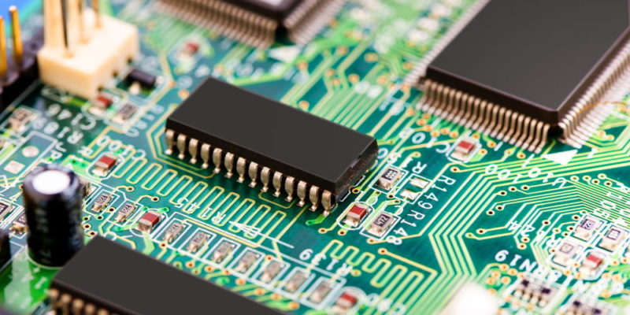
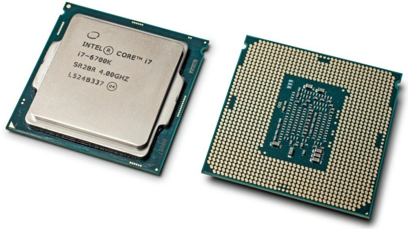

Generaciones De Las PC
Linea Del Tiempo

>
Primera Generacion
Tubos De Vacío
Los primeros sistemas informáticos usaban tubos de vacío para los circuitos y tambores magnéticos para la memoria, muy costosos de operar además de utilizar una gran cantidad de electricidad, lenguaje de máquina, solo podían resolver un problema a la vez. Entrada de los datos se basó en tarjetas perforadas y cinta de papel, y la salida se mostró en las impresiones.
Segunda Generacion
Transitores

los transistores reemplazan los tubos de vacío en la segunda generación El transistor era muy superior al tubo de vacío, lo que permitía que los ordenadores se volvieran más pequeños, más rápidos, más baratos, más eficientes energéticamente y más confiables Los ordenadores de segunda generación aún dependían de tarjetas perforadas para la entrada y copias impresas para la salida. Estos equipos pasaron del lenguaje de máquinas binarias crípticas a lenguajes simbólicos o de ensamblaje.
Tercera Generacion
Circuitos Integrados

El desarrollo del circuito integrado fue el sello distintivo de la tercera generación de ordenadores. Los transistores fueron miniaturizados y colocados en chips de silicio, llamados semiconductores, que aumentaron drásticamente la velocidad y la eficiencia. los usuarios interactuaron a través de teclados y monitores, e interactuaron con un sistema operativo accesibles para una audiencia masiva.
Cuarta Generacion
Microprocesadores

El microprocesador trajo la cuarta generación de ordenadores, Intel 4004, ubicó todos los componentes, desde la unidad de procesamiento central y la memoria hasta los controles de entrada / salida, en un solo chip. En 1981, IBM presentó su primer ordenador para el usuario doméstico, y en 1984, Apple presentó el Macintosh. desarrollo de GUI, el ratón y dispositivos de mano.
Quinta Generacion
Inteligencia Artificial (Presente Y Mas Alla)

Los dispositivos informáticos de quinta generación, basados en inteligencia artificial, aún están en desarrollo, La computación cuántica y la nanotecnología molecular cambiarán radicalmente la cara de las computadoras en los años venideros. El objetivo de la computación de quinta generación es desarrollar dispositivos que respondan al aporte del lenguaje natural y que sean capaces de aprender y autoorganizarse.